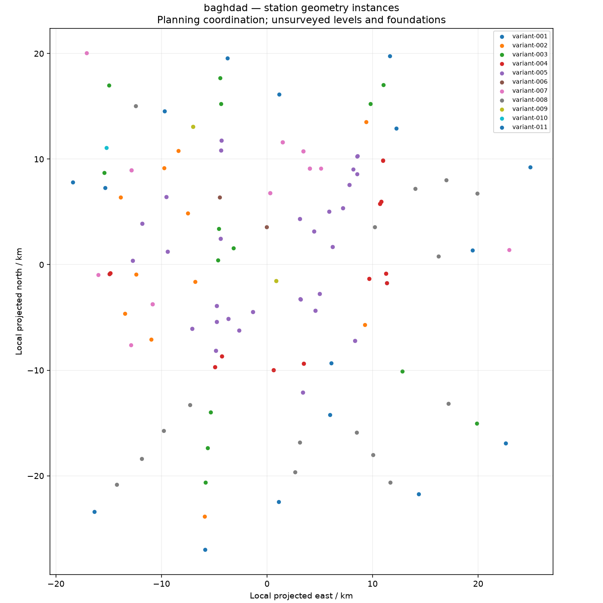

baghdad station geometry federation
159 placed instances; 11 archetypes; geometry status: placed-retained-geometry. Missing geometry is held, never replaced by fabricated envelopes. Planning coordination only.
model.ifc instances.json layout.geojson layout.png geometry-preview.png geometry-turntable.mp4

- Surveyed station coordinates and setting-out approval
- Vertical datum, terrain, formation and station level survey
- Horizontal alignment, orientation and transition geometry approval
- Site foundation, utilities, access, structural and interface acceptance
- Source geometry is retained planning geometry, not manufacturing release
Retained geometry inspection
Camera inspection of retained geometry only; not assembly, motion or collision simulation